- Visualize your model outputs with Panoply
- Post-processing workflow: example with the control experiment
- SPARC climatology
- Exercice-1
Visualization with Panoply
Panoply is installed on norStore visualization platform viz2 (viz2.norstore.uio.no). To ease the usage of viz2, we have created a script to connect and set-up your environment.
Make sure you have all the requirements for using viz2. See here to set-up your laptop or local machine.
Here we assume the two previous steps have been performed and you have launched norstoreVizWIN.sh.
After starting norstoreVizWIN.sh, a new TurboVNC window should appear:
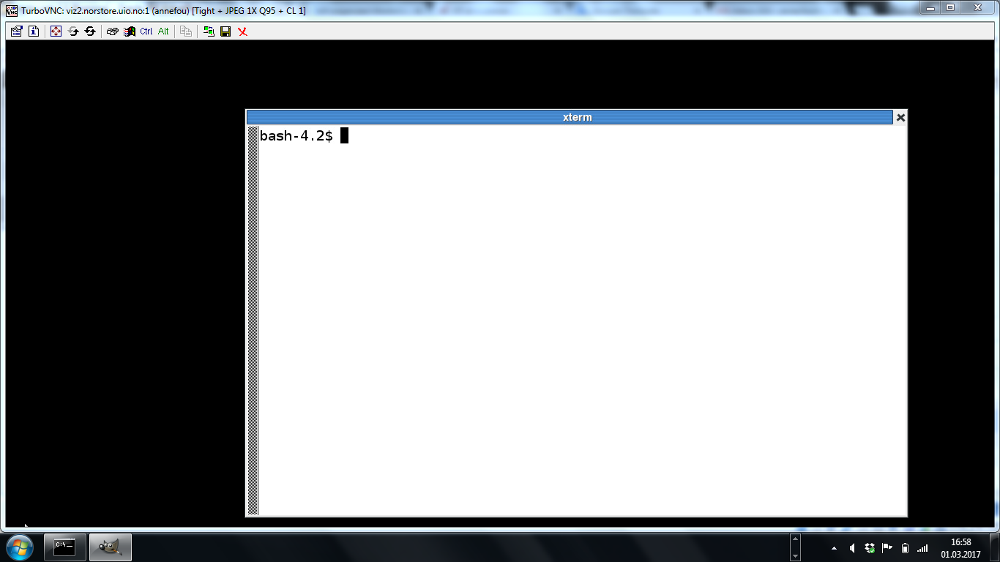
with a terminal you can use to visualize your data. We will refer it as TurboVNC Terminal and all commands to visualize your data will be performed in this terminal.
In your TurboVNC terminal:
panoply.sh
When typing the command above, a window should pop-up with a File browser.
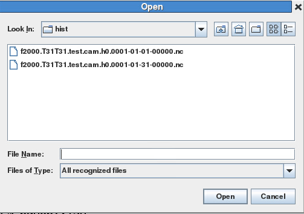
In the field "File Name", write "/projects/NS1000K/GEF4530/outputs" and then enter. This should move to /projects/NS1000K/GEF4530/outputs directory.
And browse in you $USER directory then to archive/f2000.T31T31.test/atm/hist and select and double-click (left button) either f2000.T31T31.test.cam.h0.0001-01-01-00000.nc or f2000.T31T31.test.cam.h0.0001-01-31-00000.nc. Here we show plots using f2000.T31T31.test.cam.h0.0001-01-01-00000.nc.
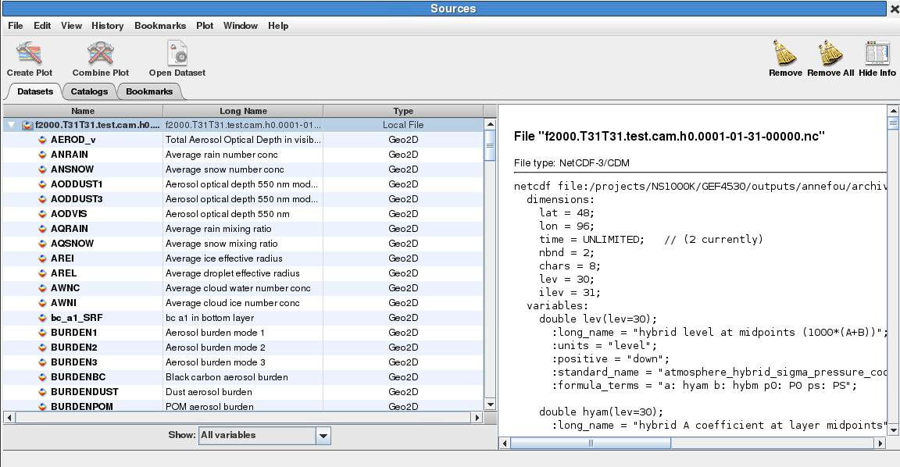
Geographical map
Select (double click) for instance "T" to visualize the temperature (4D variables):
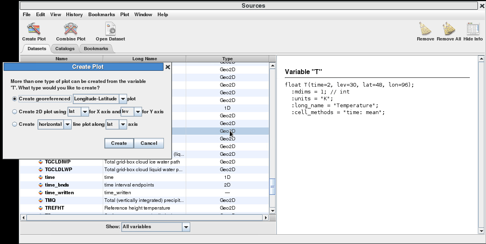
And click on "create". The temperature field will then appear:
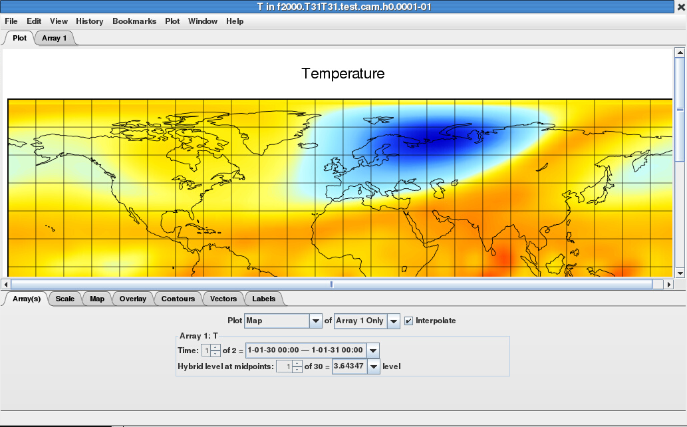
Take a few minutes to check and understand your plot:
- Which Time did you plot?
- Which level did you plot?
By default, panoply will plot the first level. And the first level for CAM 5.3 corresponds to 3.64347 sigma pressure level...
If you change from 1 to 30 (last CAM 5.3 model level i.e. level close to the surface), the color scale won't be changed (and is set with min/max temperature at the top of the atmosphere):
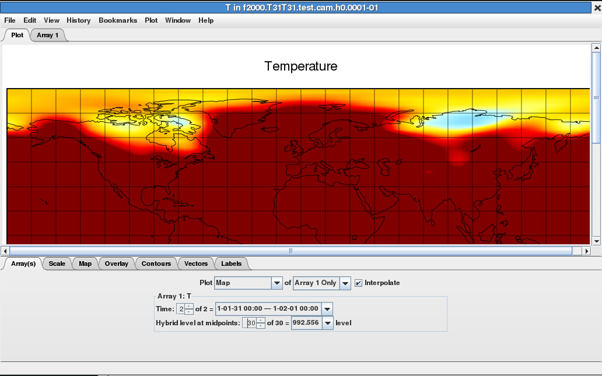
In Panoply, select tab "Scale" (at the bottom), and click on "Always fit to data":
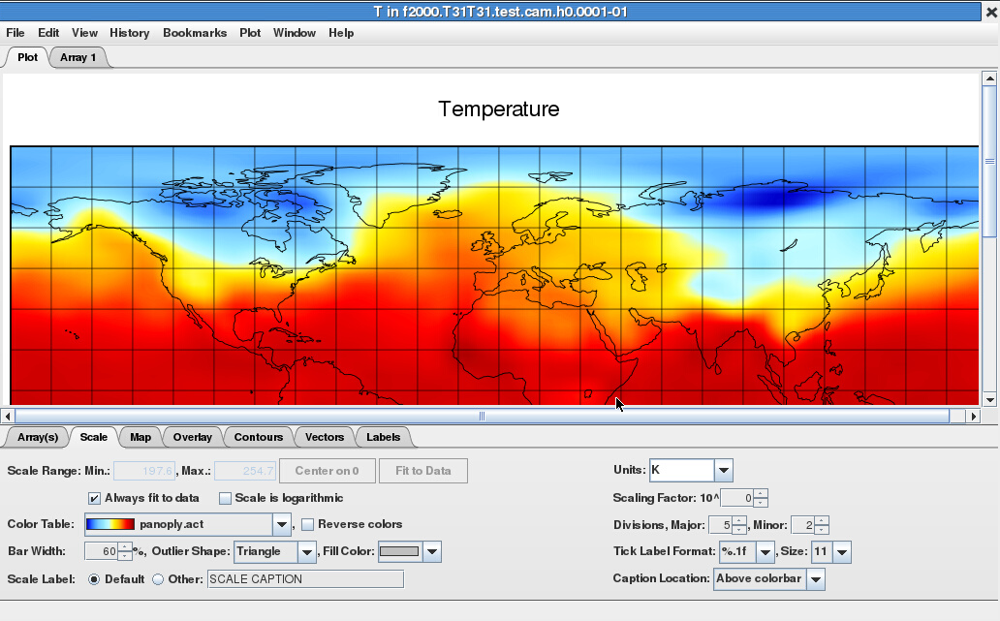
You can save your plot as an image (png format).
Georeferenced Latitude-Vertical plot
As for lat/lon 2D map, click on "Create Plot" and in "create georeferenced" select "Latitude-Vertical" instead of "Longitude-Latitude".
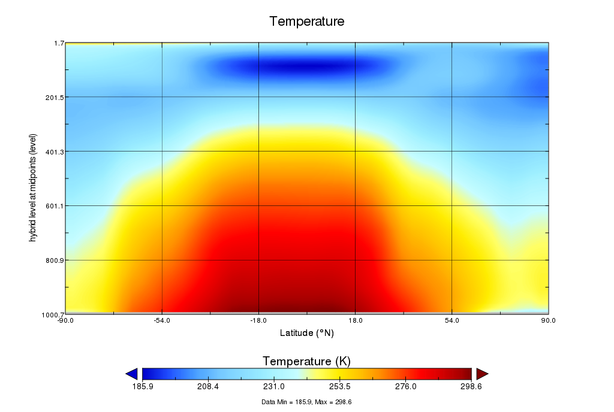
Like for geographical map, take a few minutes to analyze your plot.
The vertical axis is labelled as "hybrid level at midpoints". Again, not pressure levels but still we usually use the log to plot it as it is more intuitive to analyze. For this, go to the tab "Grid" and change the units of the vertical axis from "scalar" to "Log10".
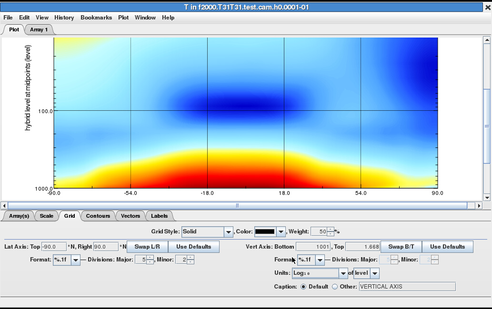
You can use panoply to plot other variables and make different kind of plots. We will now look at the control experiment (stored on norStore).
Post-processing workflow: example with the control experiment
The control experiment (which you have used to restart your 1 month experiment) results have been stored on norstore.
On cruncher (cruncher.norstore.uio.no):
cd /projects/NS1000K/GEF4530/outputs/archive/f2000.T31T31.control/atm/hist
- How many years did we run?
- What is the output frequency?
Feel free to use viz2 and visualize the model outputs from this control experiment. As you can see, analyzing output simulations that span over several years can be cumbersome.
We usually post-process our model outputs before visualization:
- Select variables of interest
- Compute monthly/yearly/zonal mean
- Convert to Pressure levels and visualize
Conversion to Pressure levels (Step-3) may not mandatory but often necessary if you wish to compare with observations or other models.
Step-2 depends on what results you wish to get. With climate models, it is unlikely you analyze daily data as simulations span over several years/decades.
Cruncher (cruncher.norstore.uio.no) is a machine you can use to post-process your model outputs once you have stored them on norStore.
Setup on cruncher
Login on cruncher (see here if you need help).
Then set-up your environment to access all the tools we will be using on cruncher:
export PATH=/projects/NS1000K/panoply/4.4.3/:$PATH
module load cdo
module load ncl
For more information see here.
Select variables of interest
Each model output file contains a large number of variables while you may be interested in a few of them only. To select variables, you may use ncks, a tool part of the nco tool suite.
For instance, on cruncher:
mkdir -p $HOME/GEF4530/control
ncks -v T f2000.T31T31.control.cam.h0.0005-01-11-00000.nc $HOME/GEF4530/control/f2000.T31T31.control.cam.h0.0005-01-11-00000_T.nc
It extracts T (Temperature) from the netCDF file f2000.T31T31.control.cam.h0.0005-01-11-00000.nc and store the result in a new netCDF file $HOME/GEF4530/control/f2000.T31T31.control.cam.h0.0005-01-11-00000_T.nc
If you want to select more variables (not only the temperature), you can give the list of variables you wish to select (comma separated).
For instance (here for two different input files):
ncks -v T,U,hyam,hybm,PS f2000.T31T31.control.cam.h0.0004-12-12-00000.nc $HOME/GEF4530/control/f2000.T31T31.control.cam.h0.0004-12-12-00000_TU.nc
ncks -v T,U,hyam,hybm,PS f2000.T31T31.control.cam.h0.0005-01-11-00000.nc $HOME/GEF4530/control/f2000.T31T31.control.cam.h0.0005-01-11-00000_TU.nc
and select T, U, hyam, hybm and PS. These variables (hyam, hybm and PS) will be required to interpolate T and U on pressure levels.
Remember that your new netCDF files are stored in your HOME area ($HOME/GEF4530/control/).
- Use panoply to visualize your new netCDF files
- Use a shell loop to extract T and U (and hyam, hybm and PS) from all the model outputs (control experiment) and store the resulting netCDF files in $HOME/GEF4530/control/
Compute monthly/yearly mean
Monthly mean
You can use CDO or NCO or python.
Here we show you how to use NCO.
To compute the average of each variable present in your netCDF files, you can use ncra:
cd /projects/NS1000K/GEF4530/outputs/archive/f2000.T31T31.control/atm/hist/
ncra f2000.T31T31.control.cam.h0.0004-01-*.nc f2000.T31T31.control.cam.h0.0005-01-*.nc $HOME/GEF4530/control/f2000.T31T31.control-0005-01-monmean.nc
If you don't specify any time, the average is done over all the time period available in your netCDF files. To be more precise and for instance to compute the monthly average for January from the fifth year of our control experiment:
cd /projects/NS1000K/GEF4530/outputs/archive/f2000.T31T31.control/atm/hist/
ncra -d time,1461.,1492. f2000.T31T31.control.cam.h0.0004-01-*.nc f2000.T31T31.control.cam.h0.0005-01-*.nc $HOME/GEF4530/control/f2000.T31T31.control-0005-01-monmean.nc
Adding a time option (-d time,1461.,1492.) allows you to specify over which time period, the average is done (here between day 1461 to day 1492).
The calendar in the CESM time manager is the 365 day or no-leap calendar.
This calendar has the standard 12 months, but it has 365 days every year and 28 days in every February.
Our CAM 5.3 control experiment started from 0001-01-01 00:00:0.0. This can be checked for instance using ncdump:
ncdump -h f2000.T31T31.control.cam.h0.0001-01-01-00000.nc
You will get:
double time(time) ;
time:long_name = "time" ;
time:units = "days since 0001-01-01 00:00:00" ;
time:calendar = "noleap" ;
time:bounds = "time_bnds" ;
To compute the monthly mean for January Year 5, we need two input files f2000.T31T31.control.cam.h0.0004-12-12-00000.nc and f2000.T31T31.control.cam.h0.0005-01-11-00000.nc because f2000.T31T31.control.cam.h0.0005-01-11-00000.nc does not contain the entire January month (starts from 11th of January).
You can use ncview to check the start and end time for each file.
With this last command, we computed the average for all the variables, while we know it won't be necessary (for our climatology, we only need T and U).
- Apply ncra to compute the average (January, year 5) on the netCDF files you first created (after ncks).
- You can use shell loops to compute the average for every month and then get 12 output files (one per month)
Remark:
We have run 8 years in our control run. However, we usually do not use the first years (model spin up) and here you may keep the last 5 years only. If you have time you may compare results when averaging over 8 years or 5 years.
Zonal mean
If you wish to compute zonal mean, you may use NCL. Here you will find several examples to compute and plot zonal means.
The example that is the most suitable for our study is zonal_2.ncl. It uses dim_avg_Wrap to compute the average of a variable's rightmost dimension at all other dimensions and retains metadata.
Convert to Pressure levels
To convert CAM 5.3 model outputs to pressure levels, the easiest is to use ncl vertical interpolation routines and in particular vinth2p.
To use vert_1.ncl to convert f2000.T31T31.control-0005-01-monmean.nc (January mean from the fifth year of our control experiment) to pressure level:
- Download vert_1.ncl and transfer it to cruncher. Here we assume you have your vert_1.ncl script in $HOME/GEF4530/control/.
- Edit vert_1.ncl (use your favourite editor such as emacs) and change the input file name:/li>
fn = "f2000.T31T31.control-0005-01-monmean.nc" ; define filename
- Then run your script with ncl on cruncher:
module load ncl
ncl vert_1.ncl
vert_1.ncl interpolates the temperature to the following pressure levels:
pnew = (/ 850.0,700.0,500.0,300.0,200.0 /)
And it creates contour plots of temperature at 850 mb, 500 mb and 200mb. You can of course change the code (for instance change the list of pressure levels in pnew and generate different plots. If you want to interpolate a different variable to pressure level, you need to change the variable read from the netCDF file:
T = in->T
The variable names can be found using for instance ncview (or ncdump -h where the option "-h" means to dump the header/metadata of the netCDF file only).
If you wish to store the resulting field to a new netCDF file, see here. Let us know if you need more help.
All the interpolation routines from NCL are available here.
The SPARC climatology T and U is stored in a file called sparc.nc and can be found on norStore:
cd /projects/NS1000K/GEF4530/SPARC
A ncl script is available in the same directory (sparc_2.ncl) and can be used to generate two plots (png file):
- Create sparc directory in your HOME on norStore:
mkdir -p $HOME/GEF4530/sparc
cd $HOME/GEF4530/sparc
- copy sparc_2.ncl in your local directory:
cp /projects/NS1000K/GEF4530/SPARC/sparc_2.ncl $HOME/GEF4530/sparc/.
- Edit $HOME/GEF4530/sparc/sparc_2.ncl and change diri (it specifies the directory where sparc.nc can be found). It is by default set to "./" and should be set to:
diri="/projects/NS1000K/GEF4530/SPARC/"
- Save your script and run ncl:
ncl sparc_2.ncl
You can visualize png images using display:
display sparc.000001.png
sparc.000001.png shows the monthly temperature climatologies (K) for each month from January to December.
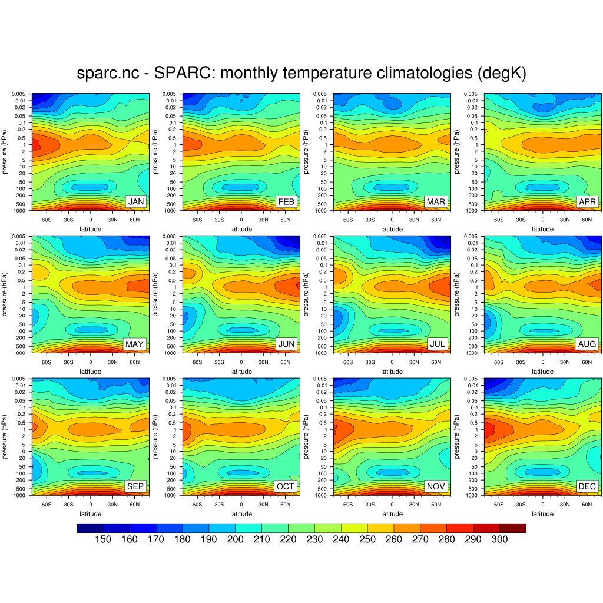
sparc.000002.png shows the monthly wind climatologies (m/s) for each
month from January to December.
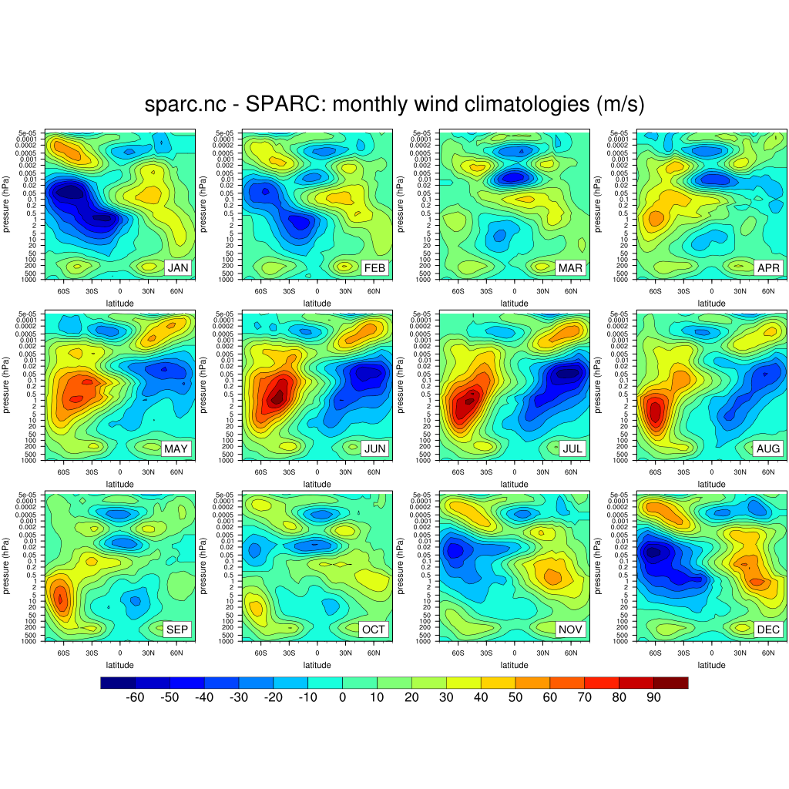
Exercice-1
- How well does CAM5 (T31/L30, 5 yr control run) represent observations?
To answer to this question, plot T and U and compare with the SPARC data climatology (online on norstore).
We give here some suggestions on how to proceed (feel free to use your own method!):
- Select T,U,hyam,hybm,PS (use ncks) for all the model outputs of the control experiment (/projects/NS1000K/GEF4530/outputs/archive/f2000.T31T31.control/atm/hist). Save these new output files in the directory $HOME/GEF4530/control/.
- For each year (you may start from year 4 to year 8), compute the monthly average using ncra.
- Use ncra again to get an average for all the January months. Repeat it for each month (February to December).
- Use zonal_2.ncl and vert_1.ncl to get a zonal mean and interpolate to pressure levels. Make sure you choose your pressure levels (change the variable pnew in vert_1.ncl so you can easily compare with SPARC climatology).
- You may use sparc_2.ncl to get plots similar to those we got with the SPARC climatology. You can also use panoply (or python).
Fulfill the first exercise until the next practical on March 27, 2017!